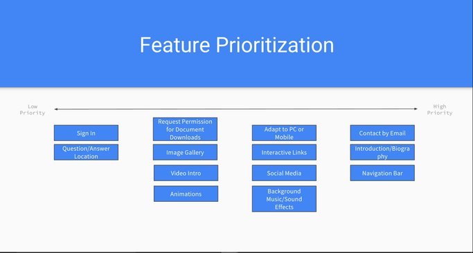

|
|
=
User ResearchUser InterviewsWith the questions that I asked I wanted to achieve a few things. The first thing was to understand what type of textual content I should have in my profile. I wanted the questions to help me get ideas about what I should put in the descriptions I had. I also wanted to see if the people had any ideas on features that would be good to have in a digital portfolio. Competitor AnalysisIn this section I wanted to compare my own profile to one that could be done in a different website or portal. I wanted to see what kind of information they asked for so that I could get ideas about what I should put in my website. I looked at the features that the websites had and I tried to add replicate something similar. Feature Value MatrixRanking the features that I wanted was very useful. This matrix made it really clear to me what features I should worry about and which ones I should not care for, for this project. There were features that would take way too much time to do for the class so I tried to focus a bit more on content rather than features.

Feature PrioritizationThese were just visuals from the feature value matrix. They helped me visualize what features I should and shouldn’t do for the website. It removed the numbers that I had gotten from the matrix making it less overwhelming on deciding which features to finalize. User TestingUser StoriesThe user stories helped me create people that might possibly want to see my website. In this section I tried to think about what different types of people might want to see. If a recruiter was having the attitude of multiple of my user stories, they would be satisfied with the information that they have received by the end of it. Cognitive Walkthrough:This was a walkthroughs that I did with other people of my site. This allowed me to see how people interacted with my website. I was able to ask the people questions about my website on the spot. If I was curious about an interaction then I was able to bring it up at the time that it happened. User TestingThese user tests allowed me to get a more quantitative view to the cognitive walkthrough. It allowed me to get raw data about what the user was clicking and why they were doing it. It was quick and easy so I was able to send it out to more people than doing a cognitive walkthrough with each of them. Summary of FindingsI saw that I didn’t really have things related to my career in the website. I needed to add the types of languages I was familiar with so that recruiters could see what I am able to do. I also realized that I needed to add my past work experiences so that recruiters could know what I have done. Finally I realized that I should show my projects outside of school. This would allow recruiters to see that I am not just a robot that works all the time. It was interesting how I got these recommendations. They came out of the cognitive walkthrough and not in the user testing. I had to ask the user for specific advise so that they could tell me. I will say that there was one person that explicitly told me that I should add more major related things without me asking. All the steps that I took to find out what was missing helped me figure it out as soon as possible. Incorporation of FindingsThe first thing that I did was change the menu name from project to experience. Since I added more information there about me and major related things, that is no longer a projects only page. In this page I included coding languages that I had practiced throughout my school career. In that page I also included where I have worked at. This will allow the user to have a visual of the types of places I have worked at. In the future I hope to be able to link work to the coding languages that I have listed. It would be cool if the user was able to download one of my coding assignment in that language. It would allow the user to see my skills. I would also like to link the images of the places I have worked at to their websites. This would allow people to get a better sense of where I worked. |
|---|